PREDICTING STUDENT PERFORMANCE IN MATH USING REGRESSION ALGORITHM
Dataset
Project Description:
The objective of this project is to predict the math score of students based on the features available in the dataset using various regression algorithms. The dataset consists of data related to students of a particular grade and their scores in Maths, Reading and Writing specified out of 100. The dataset also contains additional features such as gender, race/ethnicity, parental level of education, lunch type, and test preparation course.
VARIABLE DESCRIPTIONS:
gender: specifies gender of the student(male/female)
race: specifies race of the student(group A,group B,group C)
parental level of education: specifies highest educational qualification of any parent of each student
lunch_type: standard/reduced,the type of lunch package selected for the student
test_prep: specifies if the test preparation course was completed by the student or not
math_score: specifies score in math(our target variable)
reading_score: specifies score in reading
writing_score: specifies score in writing
All scores are taken out of 100.
Importing Libraries
Code
set.seed(12345)library(caret)
Warning: package 'caret' was built under R version 4.2.3
Loading required package: ggplot2
Loading required package: lattice
Code
library(Metrics)
Warning: package 'Metrics' was built under R version 4.2.3
Attaching package: 'Metrics'
The following objects are masked from 'package:caret':
precision, recall
Code
library(glmnet)
Warning: package 'glmnet' was built under R version 4.2.3
Since “some high school” and “high school” denote the same level of education, we can replace the former with the latter to have a uniform representation of this education level.
Code
StudentsPerformance$parent_ed_level <-ifelse(StudentsPerformance$parent_ed_level =="some high school", "high school", StudentsPerformance$parent_ed_level)unique(StudentsPerformance$parent_ed_level)
In this context, determining the feature’s distribution while disregarding other features is typically carried out.
Code
par(mfrow=c(3, 1))plot(density(df$math), main="Density Plot: math_score", ylab="Frequency", sub=paste("Skewness:", round(e1071::skewness(df$math), 2)))polygon(density(df$math), col="red")plot(density(df$reading), main="Density Plot: reading_score", ylab="Frequency", sub=paste("Skewness:", round(e1071::skewness(df$reading), 2))) # density plot for 'dist'polygon(density(df$reading), col="red")plot(density(df$writing), main="Density Plot: writing_score", ylab="Frequency", sub=paste("Skewness:", round(e1071::skewness(df$writing), 2))) # density plot for 'dist'polygon(density(df$writing), col="red")
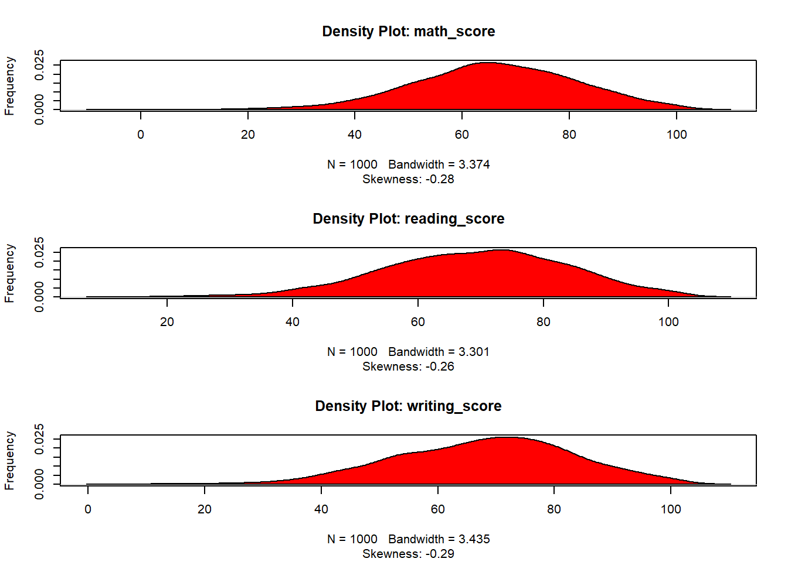
Code
library(ggplot2)ggplot(df, aes(x = math)) +geom_histogram(binwidth =5) +labs(title ="Math Scores", x ="Score", y ="Frequency") +theme_minimal() +theme(plot.title =element_text(size =20, face ="bold"))
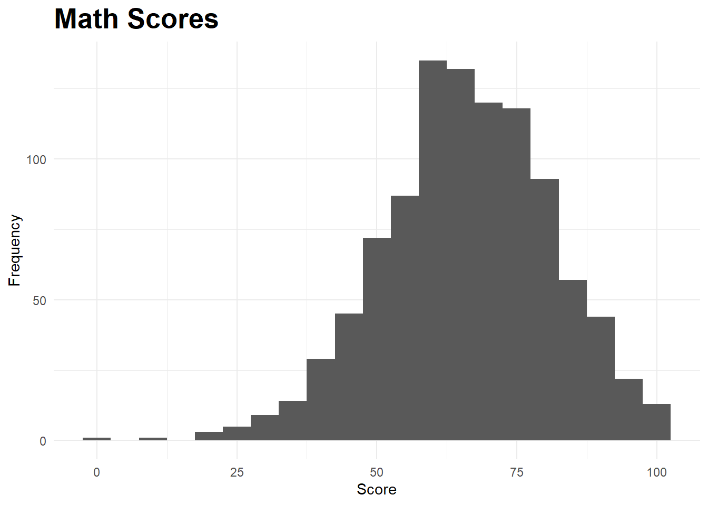
Code
ggplot(df, aes(x = reading)) +geom_histogram(binwidth =5) +labs(title ="Reading Scores", x ="Score", y ="Frequency") +theme_minimal() +theme(plot.title =element_text(size =20, face ="bold"))
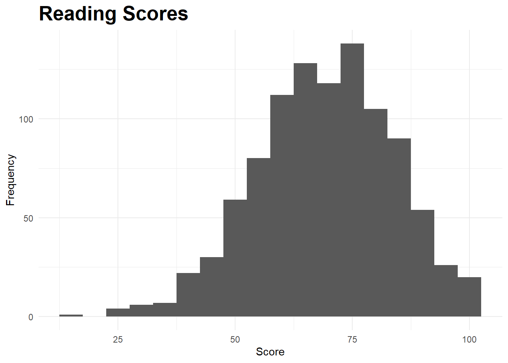
Code
ggplot(df, aes(x = writing)) +geom_histogram(binwidth =5) +labs(title ="Writing Scores", x ="Score", y ="Frequency") +theme_minimal() +theme(plot.title =element_text(size =20, face ="bold"))
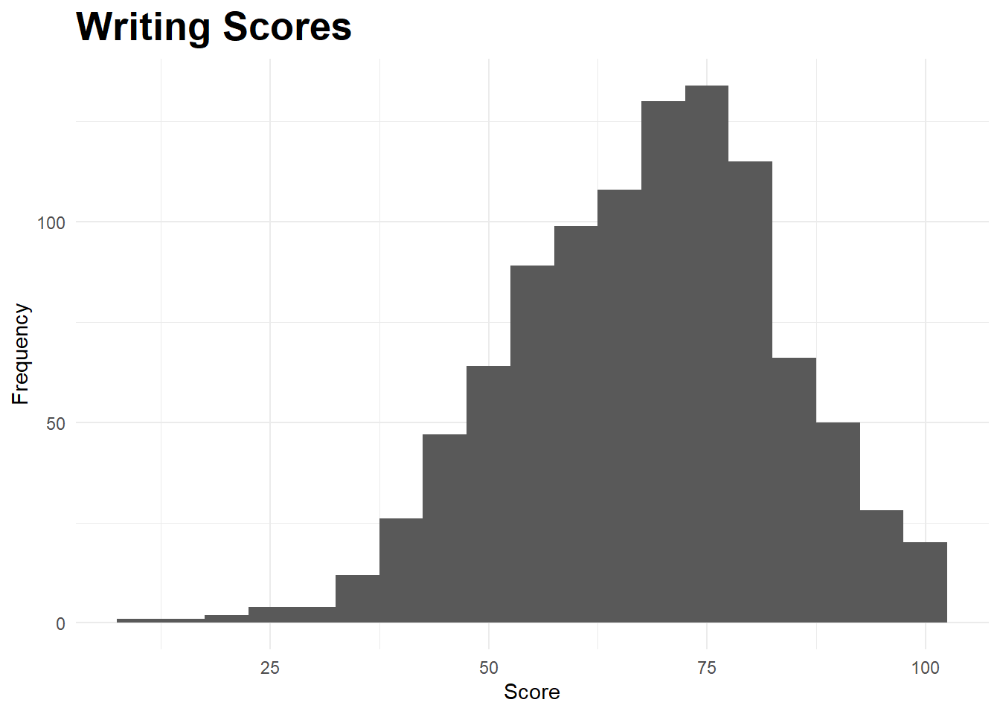
Code
ggplot(df, aes(x = total)) +geom_histogram(binwidth =10) +labs(title ="Total Scores", x ="Score", y ="Frequency") +theme_minimal() +theme(plot.title =element_text(size =20, face ="bold"))
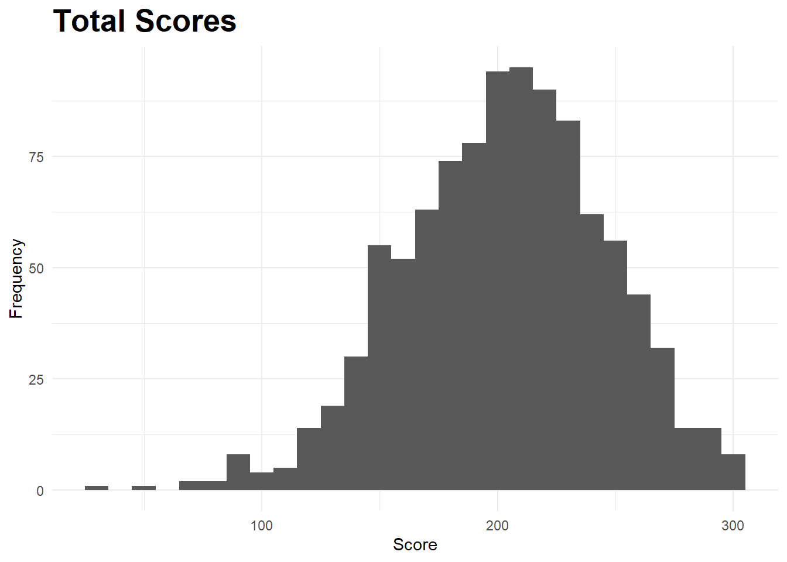
Multiple distributions that have been graphed, and each of them has a skewness towards the left side of the graph.
A leftward skew indicates that the tail on the left side of the distribution is longer than the tail on the right side. This means that there are more data points or observations with lower values, and fewer with higher values. The distributions being referred to all share this common characteristic of having a leftward skew.
Box Plots
Code
library(ggplot2)#mathggplot(df, aes(x ="", y = math)) +geom_boxplot(fill ="steelblue", color ="Black") +labs(title ="Box Plot of Math Scores", x ="", y ="Math Score") +coord_flip()
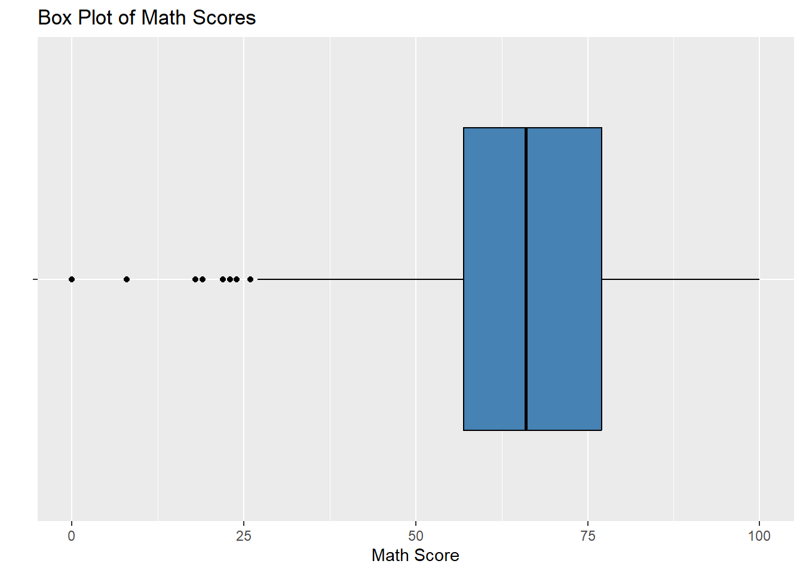
Code
#readingggplot(df, aes(x ="", y = reading)) +geom_boxplot(fill ="steelblue", color ="Black") +labs(title ="Box Plot of Reading Scores", x ="", y ="Reading Score") +coord_flip()
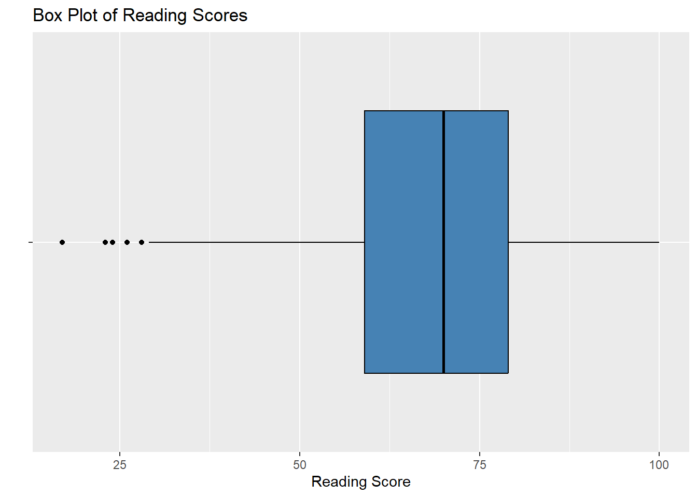
Code
#writingggplot(df, aes(x ="", y = writing)) +geom_boxplot(fill ="steelblue", color ="Black") +labs(title ="Box Plot of Writing Scores", x ="", y ="Writing Score") +coord_flip()
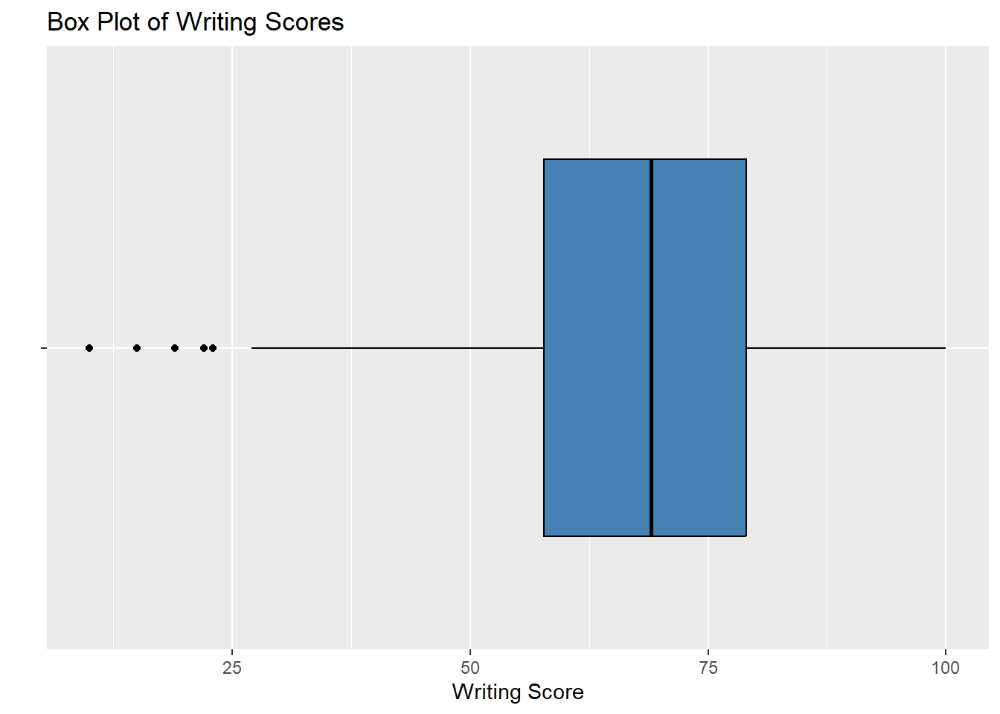
Code
#totalggplot(df, aes(x ="", y = total)) +geom_boxplot(fill ="steelblue", color ="Black") +labs(title ="Box Plot of Total Scores", x ="", y ="Total Score") +coord_flip()
Error in `[.tbl_df`(df, , nums): object 'nums' not found
Code
# Create heatmap using ggplot2ggplot(melt(corr_matrix), aes(Var1, Var2, fill = value)) +geom_tile() +scale_fill_gradient(low ="white", high ="darkmagenta") +labs(title ="Correlation Heatmap") +theme_minimal()
Error in melt(corr_matrix): object 'corr_matrix' not found
Code
# Create annotated correlation matrix using corrplotcorrplot(corr_matrix, method ="color", type ="upper", tl.col ="black", tl.srt =45, tl.cex =0.8, addCoef.col ="black")
Error in corrplot(corr_matrix, method = "color", type = "upper", tl.col = "black", : object 'corr_matrix' not found
The correlation between “total” and “Reading” as well as “Writing” is significantly high, implying a strong linear relationship between these variables. Therefore, it is recommended to remove the “total” column since it does not provide any additional information that is not already captured by the other two variables. By dropping the “total” column, we can simplify the dataset while still retaining the essential information for our analysis.
Code
df$total <-NULL
Code
new_data <- df
To develop a predictive model for math scores of students through feature engineering and selection, a duplicate copy of the original dataset will be created. This copy will serve as a platform for modifying the existing features or creating new ones to capture important information.By working on a copy of the dataset, we can ensure that the original data remains unchanged and the modifications are made in a controlled environment.
Code
new_data <-subset(new_data, select =-writing)
Code
head(new_data)
Code
ggplot(new_data, aes(x = reading, y = math, shape = gender, color = gender)) +geom_point(size =4) +scale_shape_manual(values =c(1, 2)) +geom_smooth(method ="lm", se =FALSE) +labs(title ="Scatter Plot of Reading and Math Scores by Gender", x ="Reading Score", y ="Math Score", shape ="Gender", color ="Gender") +theme_minimal()
`geom_smooth()` using formula = 'y ~ x'
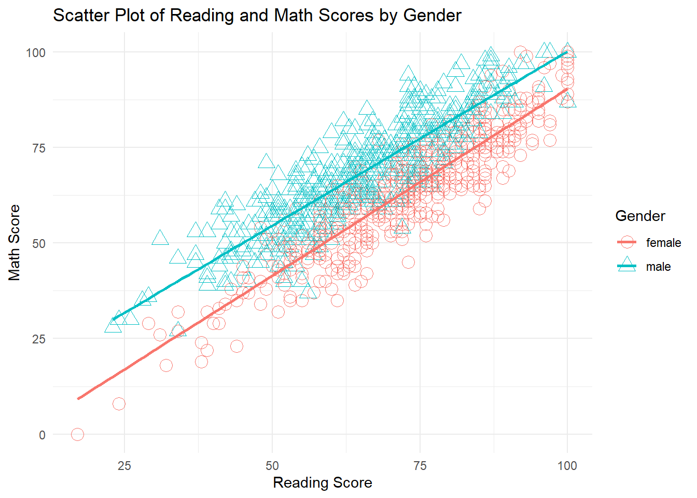
In the scatterplot that has hue parameter set as gender, we can see that male students typically have higher math scores than female students
Code
plt <-ggplot(new_data, aes(x = reading, y = math, color =factor(gender), shape =factor(lunch_type))) +geom_point(size =3) +scale_shape_manual(values =c(15, 16)) +geom_smooth(method ="lm", se =FALSE) +labs(title ="Scatter plot of math vs reading with lunch type as hue") +theme_minimal()print(plt)
`geom_smooth()` using formula = 'y ~ x'
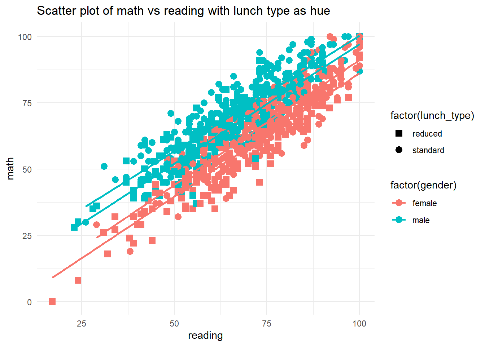
Code
plt <-ggplot(new_data, aes(x = reading, y = math, color =factor(gender), shape =factor(test_prep))) +geom_point(size =3) +scale_shape_manual(values =c(17, 18)) +geom_smooth(method ="lm", se =FALSE) +labs(title ="Scatter plot of math vs reading with test prep as hue") +theme_minimal() print(plt)
`geom_smooth()` using formula = 'y ~ x'
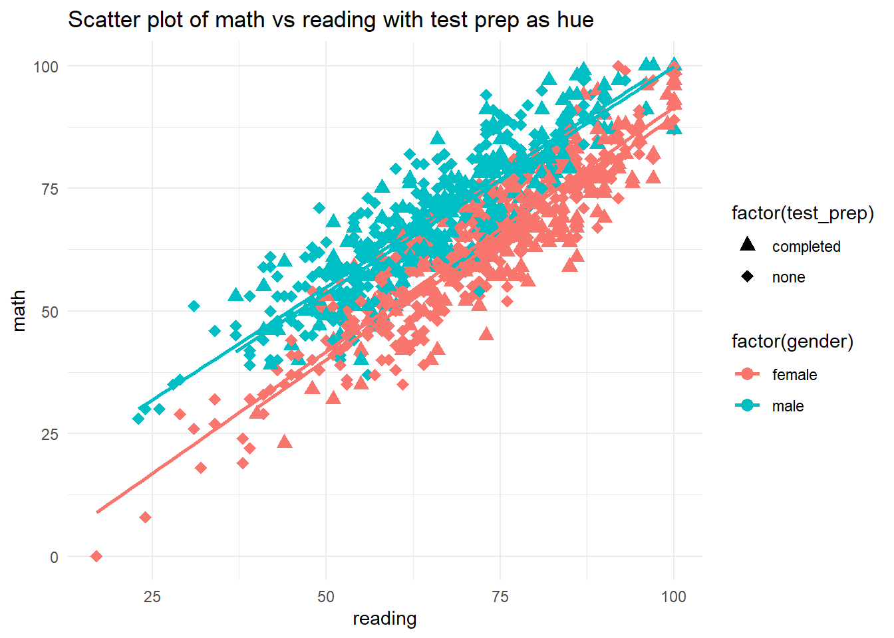
Out of the 3 scatterplots with different classification bases, gender and lunch_type seem the most effective on getting a good math score. So I will eliminate test_prep as one of the predicting features and go ahead with gender and lunch_type.
CHI-SQUARE TEST FOR FEATURE SELECTION
Here we consider two features at a time and test the null hypothesis which assumes that the 2 features are independent against the alternative hypothesis that those 2 features are dependent.
Code
chisq <-function(col1,col2) {#create a contingency tabletable <-table(new_data[[col1]],new_data[[col2]])#get chi_Sq statistics,p-value,degrees of freedom and expected frequencies.result <-chisq.test(table)#set significance levelalpha <-0.05if (result$p.value <= alpha) {print('Features are associated')} else {print('Features are not associated')}}
Code
# Execute chisq test for all the combinationschisq('gender','lunch_type')
[1] "Features are not associated"
Code
chisq('gender','parent_ed_level')
[1] "Features are not associated"
Code
chisq('gender','race')
[1] "Features are not associated"
Code
chisq('gender','test_prep')
[1] "Features are not associated"
Code
chisq('lunch_type','test_prep')
[1] "Features are not associated"
Code
chisq('lunch_type','parent_ed_level')
[1] "Features are not associated"
Code
chisq('lunch_type','race')
[1] "Features are not associated"
Code
chisq('parent_ed_level','race')
[1] "Features are not associated"
Code
chisq('parent_ed_level','test_prep')
[1] "Features are not associated"
Code
chisq('race','test_prep')
[1] "Features are not associated"
Since every pair of categorical features is independent we do not eliminate any of these for our feature selection process.
This model includes only the reading + writing + gender variable as a predictor of the math variable. The root mean squared error (RMSE) is 6.16, which means that the average prediction error is about 6.16 points. The R-squared value is 0.84, which means that the model explains about 84% of the variance in the math variable using only the reading variable as a predictor.
Model 2 (writing + reading + race + gender):
This model includes only the writing + reading + race + gender variables as a predictor of the math variable. The RMSE is 6.05, which is slightly lower than the RMSE of Model 1. The R-squared value is 0.85, which is slightly higher than the R-squared of Model 1. This suggests that the writing variable may be a better predictor of the math variable than the reading variable.
Model 3 (lunch_type, gender, reading, writing, and race):
This model includes multiple predictors (lunch_type, gender, reading, writing, and race) to predict the math variable. The RMSE is 5.73, which is the lowest among the three models. The R-squared value is 0.86, which is the highest among the three models. This suggests that including multiple predictors in the model improves the predictive accuracy of the model.
CONCLUSION
Model 3, which includes multiple predictors, performs the best in terms of predicting the math variable on the test_data.
Code
# Scatterplot of actual vs. predicted valueslibrary(ggplot2)ggplot(data =data.frame(actual = test_data$math, predicted = predictions3)) +geom_point(aes(x = actual, y = predicted)) +geom_abline(intercept =0, slope =1, linetype ="dashed") +labs(x ="Actual Math Score", y ="Predicted Math Score",title ="Actual vs. Predicted Math Scores")
# Histogram of residualsggplot(data =data.frame(residual = residuals3)) +geom_histogram(aes(x = residual), bins =20, color ="black", fill ="darkmagenta") +labs(x ="Residuals", y ="Count",title ="Histogram of Residuals")
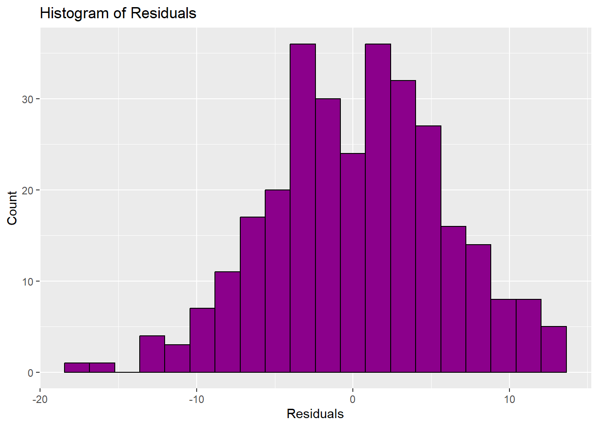
Source Code
---title: "Final Project check in 2"author: "Thrishul Pola"description: "Final Project Check in 2"date: "5/2/2023"format: html: df-print: paged css: styles.css toc: true code-fold: true code-copy: true code-tools: truecategories: - Final_Project_Checkin_2---## PREDICTING STUDENT PERFORMANCE IN MATH USING REGRESSION ALGORITHM# DatasetProject Description:The objective of this project is to predict the math score of students based on the features available in the dataset using various regression algorithms. The dataset consists of data related to students of a particular grade and their scores in Maths, Reading and Writing specified out of 100. The dataset also contains additional features such as gender, race/ethnicity, parental level of education, lunch type, and test preparation course.## VARIABLE DESCRIPTIONS:1) gender: specifies gender of the student(male/female)2) race: specifies race of the student(group A,group B,group C)3) parental level of education: specifies highest educational qualification of any parent of each student4) lunch_type: standard/reduced,the type of lunch package selected for the student5) test_prep: specifies if the test preparation course was completed by the student or not6) math_score: specifies score in math(our target variable)7) reading_score: specifies score in reading8) writing_score: specifies score in writingAll scores are taken out of 100.## Importing Libraries```{r}set.seed(12345)library(caret)library(Metrics)library(glmnet)library(readr)``````{r}StudentsPerformance <-read_csv("_data/StudentsPerformance.csv", show_col_types =FALSE)str(StudentsPerformance)``````{r}summary(StudentsPerformance)``````{r}unique(colnames(StudentsPerformance))``````{r}head(StudentsPerformance)```## Data Wrangling```{r}StudentsPerformance$total <- StudentsPerformance$math + StudentsPerformance$reading + StudentsPerformance$writing``````{r}unique(StudentsPerformance$parent_ed_level)```Since "some high school" and "high school" denote the same level of education, we can replace the former with the latter to have a uniform representation of this education level.```{r}StudentsPerformance$parent_ed_level <-ifelse(StudentsPerformance$parent_ed_level =="some high school", "high school", StudentsPerformance$parent_ed_level)unique(StudentsPerformance$parent_ed_level)``````{r}StudentsPerformance$lunch_type <-ifelse(StudentsPerformance$lunch_type =="free/reduced", "reduced", StudentsPerformance$lunch_type)``````{r}head(StudentsPerformance)df<- StudentsPerformance```# VISUAL DATA ANALYSIS## UNIVARIATE ANALYSISIn this context, determining the feature's distribution while disregarding other features is typically carried out.```{R}par(mfrow=c(3, 1))plot(density(df$math), main="Density Plot: math_score", ylab="Frequency", sub=paste("Skewness:", round(e1071::skewness(df$math), 2)))polygon(density(df$math), col="red")plot(density(df$reading), main="Density Plot: reading_score", ylab="Frequency", sub=paste("Skewness:", round(e1071::skewness(df$reading), 2))) # density plot for 'dist'polygon(density(df$reading), col="red")plot(density(df$writing), main="Density Plot: writing_score", ylab="Frequency", sub=paste("Skewness:", round(e1071::skewness(df$writing), 2))) # density plot for 'dist'polygon(density(df$writing), col="red")``````{r}library(ggplot2)ggplot(df, aes(x = math)) +geom_histogram(binwidth =5) +labs(title ="Math Scores", x ="Score", y ="Frequency") +theme_minimal() +theme(plot.title =element_text(size =20, face ="bold"))ggplot(df, aes(x = reading)) +geom_histogram(binwidth =5) +labs(title ="Reading Scores", x ="Score", y ="Frequency") +theme_minimal() +theme(plot.title =element_text(size =20, face ="bold"))ggplot(df, aes(x = writing)) +geom_histogram(binwidth =5) +labs(title ="Writing Scores", x ="Score", y ="Frequency") +theme_minimal() +theme(plot.title =element_text(size =20, face ="bold"))ggplot(df, aes(x = total)) +geom_histogram(binwidth =10) +labs(title ="Total Scores", x ="Score", y ="Frequency") +theme_minimal() +theme(plot.title =element_text(size =20, face ="bold"))```Multiple distributions that have been graphed, and each of them has a skewness towards the left side of the graph. A leftward skew indicates that the tail on the left side of the distribution is longer than the tail on the right side. This means that there are more data points or observations with lower values, and fewer with higher values. The distributions being referred to all share this common characteristic of having a leftward skew.## Box Plots```{r}library(ggplot2)#mathggplot(df, aes(x ="", y = math)) +geom_boxplot(fill ="steelblue", color ="Black") +labs(title ="Box Plot of Math Scores", x ="", y ="Math Score") +coord_flip()#readingggplot(df, aes(x ="", y = reading)) +geom_boxplot(fill ="steelblue", color ="Black") +labs(title ="Box Plot of Reading Scores", x ="", y ="Reading Score") +coord_flip()#writingggplot(df, aes(x ="", y = writing)) +geom_boxplot(fill ="steelblue", color ="Black") +labs(title ="Box Plot of Writing Scores", x ="", y ="Writing Score") +coord_flip()#totalggplot(df, aes(x ="", y = total)) +geom_boxplot(fill ="steelblue", color ="Black") +labs(title ="Box Plot of Total Scores", x ="", y ="Total Score") +coord_flip()``````{r}library(ggplot2)cat_list <- df$mathcat_list_1 <- df$readingcat_list_2 <- df$writingcat_list_3 <- df$total# histogram with added parametershist(cat_list,main="Math Histogram",col="darkmagenta",freq=TRUE)hist(cat_list_1,main="Reading Histogram",col="darkmagenta",freq=TRUE)hist(cat_list_2,main="Writing Histogram",col="darkmagenta",freq=TRUE)hist(cat_list_3,main="Total Histogram",col="darkmagenta",freq=TRUE)``````{r}cat_list <-c('gender', 'lunch_type', 'test_prep')for (col in cat_list) { plt <-ggplot(df, aes_string(x = col)) +geom_bar(stat ="count", fill ="steelblue") +labs(x = col, y ="Count", title =paste("Count plot of", col))print(plt)}``````{r}ggplot(df, aes(x =factor(parent_ed_level, levels =c('high school', 'some college',"associate's degree", "bachelor's degree", "master's degree")))) +geom_bar(fill ="steelblue") +labs(x ="Parent Education Level", y ="Count", title ="Count plot of Parent Education Level") +theme(axis.text.x =element_text(angle =45, hjust =1))``````{r}library(ggplot2)# Count plot for parental education levelggplot(df, aes(x = parent_ed_level, fill = parent_ed_level)) +geom_bar(stat ="count") +labs(x ="Parent Education Level", y ="Count", title ="Count Plot of Parent Education Level") +scale_x_discrete(limits =c("high school", "some college", "associate's degree", "bachelor's degree", "master's degree")) +theme(axis.text.x =element_text(angle =45, hjust =1))# Count plot for raceggplot(df, aes(x = race, fill = race)) +geom_bar(stat ="count") +labs(x ="Race/Ethnicity", y ="Count", title ="Count Plot of Race/Ethnicity") +scale_x_discrete(limits =c("group C", "group D", "group B", "group E", "group A")) +theme(axis.text.x =element_text(angle =45, hjust =1))```# MULTIVARIATE ANALYSIS```{r}library(ggplot2)hue <-function(a, b) {if (a =="parent_ed_level") {ggplot(df, aes_string(x = a, fill = b)) +geom_bar(position ="dodge") +scale_x_discrete(limits =c("some high school", "high school", "some college", "associate's degree", "bachelor's degree", "master's degree")) +xlab(a) +ylab("Count") +ggtitle(paste("Count plot of", a, "by", b)) +theme(axis.text.x =element_text(angle =45, hjust =1)) } else {ggplot(df, aes_string(x = a, fill = b)) +geom_bar(position ="dodge") +xlab(a) +ylab("Count") +ggtitle(paste("Count plot of", a, "by", b)) }}``````{r}hue("parent_ed_level", "gender")``````{r}hue("parent_ed_level", "race")``````{r}library(ggplot2)library(corrplot)library(reshape2)# Compute correlation matrixcorr_matrix <-cor(df[, nums])# Create heatmap using ggplot2ggplot(melt(corr_matrix), aes(Var1, Var2, fill = value)) +geom_tile() +scale_fill_gradient(low ="white", high ="darkmagenta") +labs(title ="Correlation Heatmap") +theme_minimal()# Create annotated correlation matrix using corrplotcorrplot(corr_matrix, method ="color", type ="upper", tl.col ="black", tl.srt =45, tl.cex =0.8, addCoef.col ="black")```The correlation between "total" and "Reading" as well as "Writing" is significantly high, implying a strong linear relationship between these variables. Therefore, it is recommended to remove the "total" column since it does not provide any additional information that is not already captured by the other two variables. By dropping the "total" column, we can simplify the dataset while still retaining the essential information for our analysis.```{r}df$total <-NULL``````{r}new_data <- df```To develop a predictive model for math scores of students through feature engineering and selection, a duplicate copy of the original dataset will be created. This copy will serve as a platform for modifying the existing features or creating new ones to capture important information.By working on a copy of the dataset, we can ensure that the original data remains unchanged and the modifications are made in a controlled environment. ```{r}new_data <-subset(new_data, select =-writing)``````{r}head(new_data)``````{r}ggplot(new_data, aes(x = reading, y = math, shape = gender, color = gender)) +geom_point(size =4) +scale_shape_manual(values =c(1, 2)) +geom_smooth(method ="lm", se =FALSE) +labs(title ="Scatter Plot of Reading and Math Scores by Gender", x ="Reading Score", y ="Math Score", shape ="Gender", color ="Gender") +theme_minimal()```In the scatterplot that has hue parameter set as gender, we can see that male students typically have higher math scores than female students```{r}plt <-ggplot(new_data, aes(x = reading, y = math, color =factor(gender), shape =factor(lunch_type))) +geom_point(size =3) +scale_shape_manual(values =c(15, 16)) +geom_smooth(method ="lm", se =FALSE) +labs(title ="Scatter plot of math vs reading with lunch type as hue") +theme_minimal()print(plt) ``````{r}plt <-ggplot(new_data, aes(x = reading, y = math, color =factor(gender), shape =factor(test_prep))) +geom_point(size =3) +scale_shape_manual(values =c(17, 18)) +geom_smooth(method ="lm", se =FALSE) +labs(title ="Scatter plot of math vs reading with test prep as hue") +theme_minimal() print(plt)```Out of the 3 scatterplots with different classification bases, gender and lunch_type seem the most effective on getting a good math score. So I will eliminate test_prep as one of the predicting features and go ahead with gender and lunch_type.# CHI-SQUARE TEST FOR FEATURE SELECTIONHere we consider two features at a time and test the null hypothesis which assumes that the 2 features are independent against the alternative hypothesis that those 2 features are dependent.```{r}chisq <-function(col1,col2) {#create a contingency tabletable <-table(new_data[[col1]],new_data[[col2]])#get chi_Sq statistics,p-value,degrees of freedom and expected frequencies.result <-chisq.test(table)#set significance levelalpha <-0.05if (result$p.value <= alpha) {print('Features are associated')} else {print('Features are not associated')}}``````{r}# Execute chisq test for all the combinationschisq('gender','lunch_type')chisq('gender','parent_ed_level')chisq('gender','race')chisq('gender','test_prep')chisq('lunch_type','test_prep')chisq('lunch_type','parent_ed_level')chisq('lunch_type','race')chisq('parent_ed_level','race')chisq('parent_ed_level','test_prep')chisq('race','test_prep')```Since every pair of categorical features is independent we do not eliminate any of these for our feature selection process.```{r}head(new_data)```Encoding the categorical features```{r}cat_list <-c('gender', 'race', 'lunch_type', 'parent_ed_level')for (col in cat_list) { new_data[[col]] <-factor(new_data[[col]])}``````{r}table(new_data$race)``````{r}new_data$reading <- new_data$reading /100``````{r}y <- y/100``````{r}library(corrplot)library(ggplot2)library(reshape2)# Convert columns to numeric if needednew_data$gender <-as.numeric(new_data$gender)new_data$race <-as.numeric(new_data$race)new_data$parent_ed_level <-as.numeric(new_data$parent_ed_level)new_data$lunch_type <-as.numeric(new_data$lunch_type)# Calculate correlation matrixcorr_matrix <-cor(new_data)# Plot heatmap with annotationsggplot(melt(corr_matrix), aes(Var1, Var2, fill = value, color ="black")) +geom_tile() +scale_fill_gradient(low ="white", high ="steelblue") +geom_text(aes(label =round(value, 2)), size =3, color ="black") +labs(title ="Correlation Heatmap") +theme_minimal()```By correlation coefficient we can conclude that there is no high-level of correlation between any of the features```{r}head(df)```# Multiple Linear Regression```{r}# Split the data into training and testing setsset.seed(123)train_idx <-sample(nrow(df), nrow(df) *0.7)train_data <- df[train_idx, ]test_data <- df[-train_idx, ]model1 <-lm(math ~ reading + writing + gender, data = train_data)predictions1 <-predict(model1, newdata = test_data)rmse1 <-sqrt(mean((test_data$math - predictions1)^2))r_squared1 <-summary(model1)$r.squaredmodel2 <-lm(math ~ writing + reading + race + gender , data = train_data)predictions2 <-predict(model2, newdata = test_data)rmse2 <-sqrt(mean((test_data$math - predictions2)^2))r_squared2 <-summary(model2)$r.squaredmodel3 <-lm(math ~ lunch_type + gender + reading + writing + race, data = train_data)predictions3 <-predict(model3, newdata = test_data)rmse3 <-sqrt(mean((test_data$math - predictions3)^2))r_squared3 <-summary(model3)$r.squared# Evaluate the models on the test datacat("Model 1 (math ~ reading + writing + gender): RMSE = ", rmse1, ", R-squared = ", r_squared1, "\n")cat("Model 2 (writing + reading + race + gender): RMSE = ", rmse2, ", R-squared = ", r_squared2, "\n")cat("Model 3 (lunch_type + gender + reading + writing + race): RMSE = ", rmse3, ", R-squared = ", r_squared3 )```## Model 1 (reading + writing + gender): This model includes only the reading + writing + gender variable as a predictor of the math variable. The root mean squared error (RMSE) is 6.16, which means that the average prediction error is about 6.16 points. The R-squared value is 0.84, which means that the model explains about 84% of the variance in the math variable using only the reading variable as a predictor.## Model 2 (writing + reading + race + gender): This model includes only the writing + reading + race + gender variables as a predictor of the math variable. The RMSE is 6.05, which is slightly lower than the RMSE of Model 1. The R-squared value is 0.85, which is slightly higher than the R-squared of Model 1.This suggests that the writing variable may be a better predictor of the math variable than the reading variable.## Model 3 (lunch_type, gender, reading, writing, and race): This model includes multiple predictors (lunch_type, gender, reading, writing, and race) to predict the math variable. The RMSE is 5.73, which is the lowest among the three models. The R-squared value is 0.86, which is the highest among the three models. This suggests that including multiple predictors in the model improves the predictive accuracy of the model.# CONCLUSIONModel 3, which includes multiple predictors, performs the best in terms of predicting the math variable on the test_data.```{r}# Scatterplot of actual vs. predicted valueslibrary(ggplot2)ggplot(data =data.frame(actual = test_data$math, predicted = predictions3)) +geom_point(aes(x = actual, y = predicted)) +geom_abline(intercept =0, slope =1, linetype ="dashed") +labs(x ="Actual Math Score", y ="Predicted Math Score",title ="Actual vs. Predicted Math Scores")# Residual plotresiduals3 <- test_data$math - predictions3ggplot(data =data.frame(fitted = predictions3, residual = residuals3)) +geom_point(aes(x = fitted, y = residual)) +geom_hline(yintercept =0, linetype ="dashed") +labs(x ="Fitted Values", y ="Residuals",title ="Residual Plot")# Histogram of residualsggplot(data =data.frame(residual = residuals3)) +geom_histogram(aes(x = residual), bins =20, color ="black", fill ="darkmagenta") +labs(x ="Residuals", y ="Count",title ="Histogram of Residuals")``````{r}```